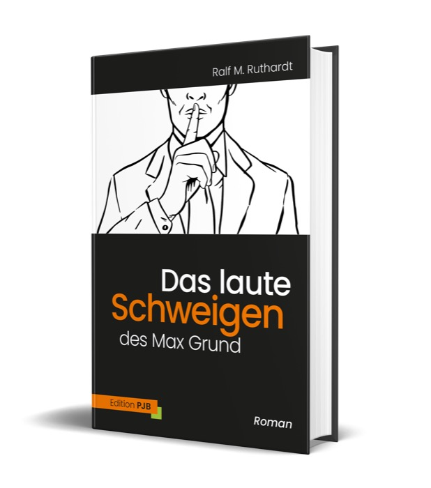
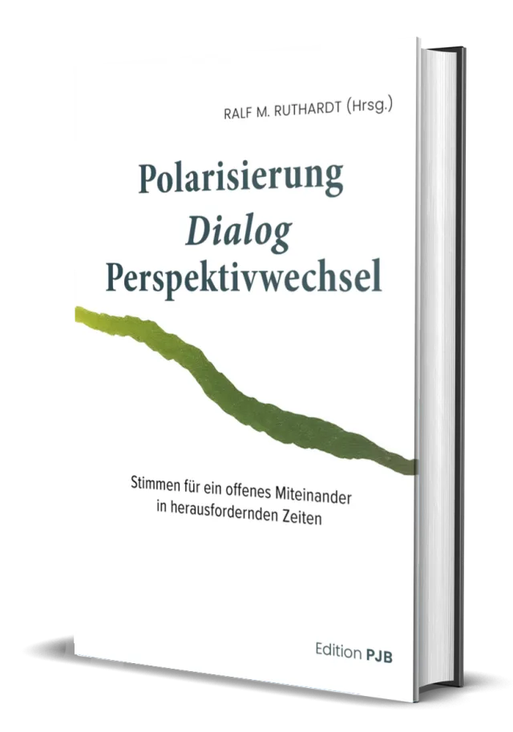
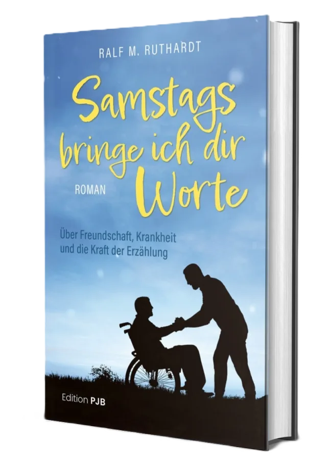
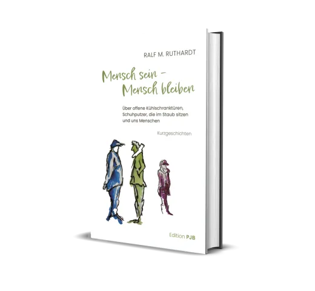
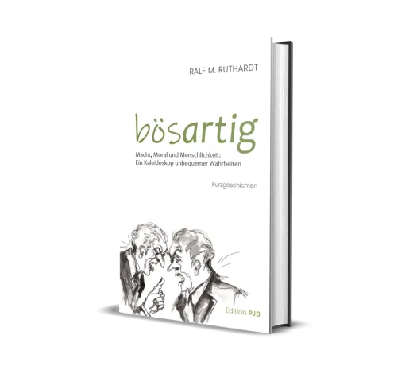
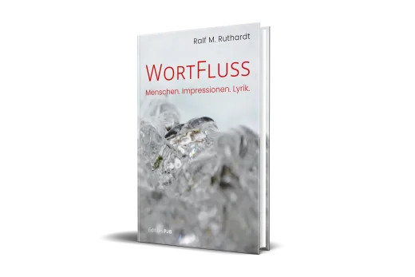
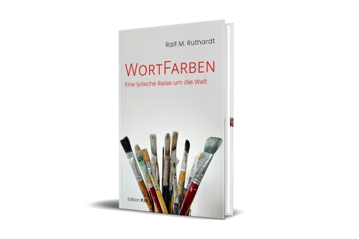
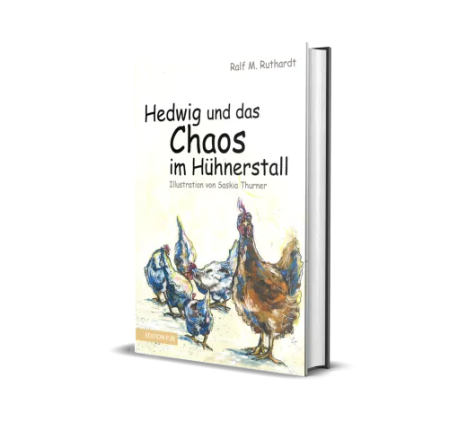
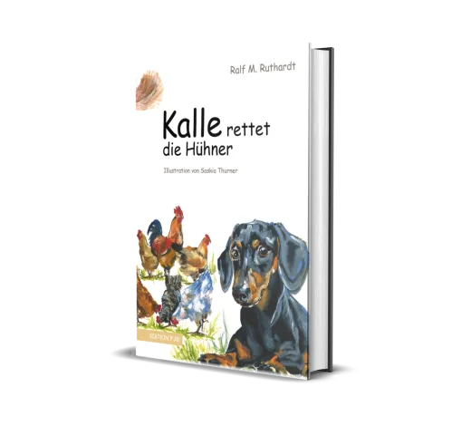

Autor · Herausgeber · Ex-Unternehmer
Wir reden lauter denn je. Und sagen uns immer weniger.
Ralf M. Ruthardt schreibt über Mensch und Gesellschaft. Bücher, die nicht belehren, sondern zum Hinsehen einladen. Damit wir trotz aller Unterschiede wieder ins Gespräch kommen.

Die Gegenwart
Eine laute Zeit, in der das Gespräch leiser wird
Die Öffentlichkeit ist gereizt und gespalten. Viele Menschen ziehen sich zurück, weil ihnen das Reden zu anstrengend oder zu riskant geworden ist. Genau dieses Schweigen verändert, wie wir zusammenleben.
Lieber still als angeeckt
Aus Sorge vor Widerspruch behalten immer mehr Menschen ihre Meinung für sich. Das Feld bleibt den Lautesten.
Lager statt Gespräch
Vorschnelle Einteilung in Gut und Böse ersetzt das Zuhören. Wer differenziert, fällt zwischen die Stühle.
Tempo statt Tiefe
Die Hektik sozialer Netzwerke belohnt Empörung. Für das genaue Hinsehen bleibt kaum noch Raum.
Die Idee dahinter
Bücher als Einladung zum Perspektivwechsel
Ralf Ruthardt verbindet erzählerische Kraft mit gesellschaftlicher Beobachtung. Seine Texte geben keine fertigen Antworten. Sie öffnen Räume, in denen unterschiedliche Wirklichkeiten nebeneinander bestehen dürfen. Mal nachdenklich, mal unbequem, oft berührend. Immer mit dem Menschen im Zentrum.
Stimmen zum Werk
Was Leserinnen und Leser sagen
„Ungewöhnlich. Kurzweilig. Lesenswert."
Nickolas Emrich, SPIEGEL-Bestseller-Autor
zu „Mensch sein – Mensch bleiben"
„Kaum ein Autor in der deutschsprachigen Literatur traut sich das, was Ruthardt uns mit Leichtigkeit zumutet. Gerade deshalb lesenswert."
Nickolas Emrich, SPIEGEL-Bestseller-Autor
zu „Untergang der GREEN"
„Ein Buch, das Narrative entlarvt und zum Denken zwingt."
Prof. Dr. Erick Behar-Villegas
zu „bösARTIG"
„Es ist angenehm, in diesen aufgewühlten Zeiten etwas Schönes in Händen zu halten."
Maria Moser
zu „WortFarben"
Das laute Schweigen des Max Grund
Max Grund ist ein Mann, der zu viel denkt und immer weniger sagt. Er leidet an der Lage des Landes, an einer Öffentlichkeit, in der das offene Wort schwerer fällt. Ein Gegenwartsroman über Meinungsfreiheit, Demokratie und die Sorge um die nächste Generation. Nah an der Wirklichkeit, sorgfältig recherchiert, mit einem Quellenapparat, wie man ihn in einem Roman selten findet.

Anthologie · Herausgeber
Polarisierung. Dialog. Perspektivwechsel
Achtzehn Stimmen für ein offenes Miteinander. Eine Einladung zum Dialog, herausgegeben von Ralf Ruthardt. Genau das Thema seines Magazins mitmenschenreden, in Buchform.

Roman · auch als Hörbuch
Samstags bringe ich dir Worte
Über Freundschaft, Krankheit und die Kraft der Erzählung. Ein warmer, Mut machender Roman. Sein Held trägt denselben Namen wie das Hauptbuch: Max Grund.
Das ganze Werk
Ein Autor, viele Zugänge
Vom Gesellschaftsroman bis zum Kinderbuch. Such dir den Einstieg, der zu dir passt.
Romane
Kurzgeschichten


Lyrik


Kinderbücher · Prosa meets Art
Gemeinsam mit der Illustratorin Saskia Thurner.


Häufige Fragen
Gut zu wissen
Um einen Mann, der an der gesellschaftlichen Lage leidet und verstummt. Ein Gegenwartsroman über Meinungsfreiheit, Demokratie und die Frage, warum so viele Menschen ihre Meinung für sich behalten.
Nein. Es geht um Menschen, Beziehungen und das Miteinander. Wer gern über das Leben nachdenkt, findet einen Zugang. Manche Bücher wie „Samstags bringe ich dir Worte" sind vor allem menschlich und warm.
Ein guter Einstieg ist „Das laute Schweigen des Max Grund". Wer es persönlicher mag, beginnt mit „Samstags bringe ich dir Worte". Wer den gesellschaftlichen Dialog sucht, mit der Anthologie „Polarisierung".
Mehrere Titel gibt es als Paperback und E-Book, „Samstags bringe ich dir Worte" auch als Hörbuch. Die konkreten Formate findest du je Titel beim Verlag Edition PJB.
Ein von Ralf Ruthardt herausgegebener Raum für Perspektivwechsel und konstruktiven Dialog, jenseits der Hektik sozialer Netzwerke und vorschneller Lagerbildung.
Ja. Mit der Illustratorin Saskia Thurner sind die Hühner-Geschichten „Hedwig und das Chaos im Hühnerstall" und „Kalle rettet die Hühner" entstanden.
Komm ins Gespräch
Entdecke die Bücher von Ralf M. Ruthardt und werde Teil eines Dialogs, der zuhört, bevor er urteilt.